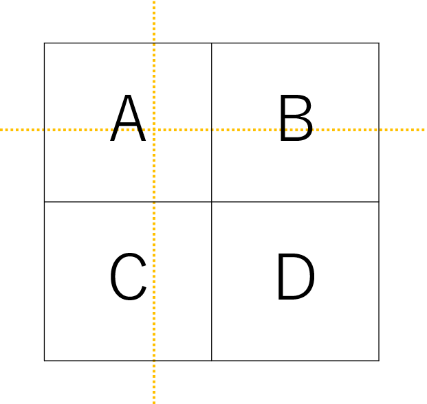
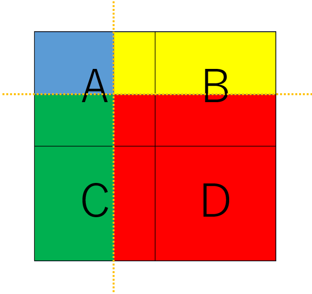
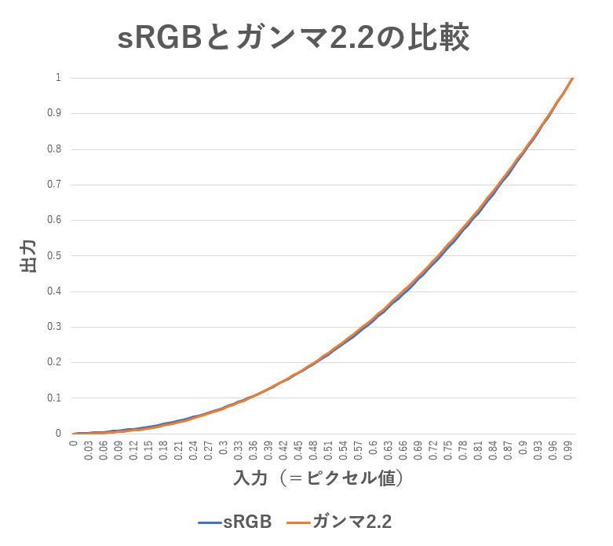
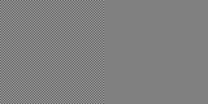
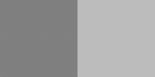
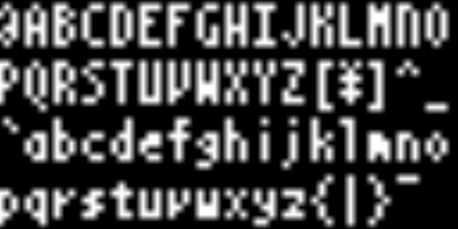
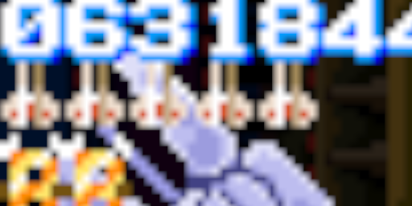
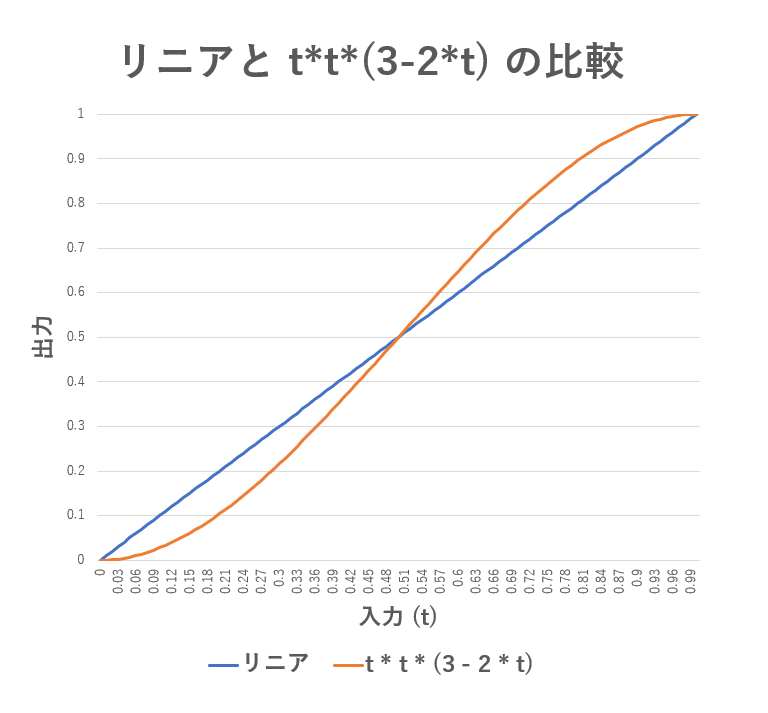
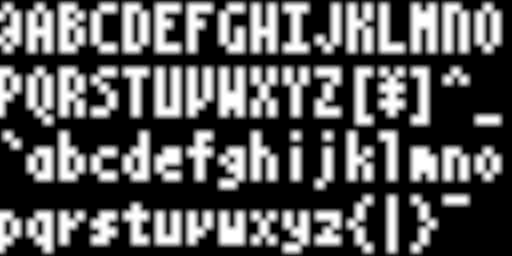

レトロゲームのドット絵の拡大表示と EOTF の関係
この文書では、 レトロゲームを最新の PC やコンソールに移植するような場合に必要となる、 低解像度のドット絵を高解像度ディスプレイに拡大表示する処理についてまとめます。 そして、拡大処理で見落としがちな問題とその解決方法、および改良と高速化について触れます。この文書では、ごく基本的なバイリニアフィルタによる拡大処理のみを取り扱います。 高解像度化技術周辺や、 CRT の走査線や画素の再現といったような内容は、 この文書で取り扱う範囲外なので一切触れません。 また、 話を簡単にするため、拡大結果を sRGB 規格のディスプレイに表示するケースのみを考えます。
筆者はディスプレイの規格が専門分野ではないので、 色の定義などの理解が甘い箇所があるかもしれません。あらかじめご了承ください。 何か間違いがありましたら、ご指摘いただければ幸いです。
概要
レトロゲームが作成された当時のディスプレイは解像度が低く、 ドットは滲んで表示されていました。 当時のドット絵はこれを前提に描かれているため、 当時のゲーム画面を高解像度ディスプレイに表示する際、 ドットの滲みを再現しないと元のドット絵の雰囲気が出せない場合があります。ドットの滲みを再現するには、 単純に隣接ピクセル同士で画像をぼかすような処理を入れれば良いように思えます。 しかしこのような処理を適切に行うには、 ディスプレイの発色について理解する必要があります。
この文書では、 技術背景について解説しながら、 入力画像から以下のような出力画像を得る過程を解説していきます。
入力画像
出力画像
最近傍フィルタ と バイリニアフィルタ
テクスチャピクセルの基本的なサンプリング方法として、 最近傍フィルタとバイリニアフィルタがあります。- 最近傍フィルタ
-
指定されたテクスチャ座標の最も近くにあるピクセルを１つ選択し出力するサンプリング方法です。
下図のようにテクスチャ座標（オレンジの破線）が指定された場合、
最も近い位置である A のピクセルを読み取り、そのまま出力します。

- バイリニアフィルタ
-
指定されたテクスチャ座標の周辺の 2x2 ピクセルを取得し、
これらを線形補間して出力するサンプリング方法です。
下図のようにテクスチャ座標（オレンジの破線）が指定された場合、
A B C D の 4 つのピクセルを読み取り、
A:B:C:D = 赤:緑:黄:青 の面積比で重みづけし、線形補間した結果を出力します。

- バイリニアフィルタは要注意
- ドットの形をそのまま拡大したいなら 最近傍フィルタ を利用し、 ぼかして拡大したいなら バイリニアフィルタ を利用すればよさそうに思えます。 しかし実際には、 バイリニアフィルタの結果を正しく得るには、 ディスプレイの EOTF を考慮する必要があり、話は単純ではありません。 後述していきます。
ディスプレイの EOTF
ピクセルの値と、実際に画面から出力される光の強さの関係を把握する必要があります。- EOTF
-
電気信号の強さ（ここではピクセル値）と画面から出力される光の強さの関係を定義する関数を、
EOTF（Electro-Optical Transfer Function の略）と呼びます。
EOTF は、単純な比例の式とは限りません。
- レトロゲーム世代のディスプレイガンマ
-
レトロゲーム世代のドット絵は、
1980～90年代当時の家庭用テレビやパソコン用ディスプレイ上で正しく見えるように調整されています。
当時のドット絵を正しく取り扱うには、
当時のディスプレイの発色を理解する必要があります。
当時のディスプレイは CRT ディスプレイです。 CRT ディスプレイは、EOTF のような厳密な定義を持ちませんが、 その仕組み上、電気信号の強さと出力される光の強さの関係は、 一般に次のようになります。
この文書では、 レトロゲーム世代のディスプレイの EOTF として ガンマ 2.2 の曲線を利用していきます。L: 画面から出力される光の強さ V: 電気信号の強さ（ここではピクセル値） ガンマ値: 2.2 L = V ^ ガンマ値
- sRGB 規格のディスプレイ
-
一方、現世代のディスプレイでは、発色に関する厳密な定義が存在します。
1990 年代末に出現した規格である sRGB では、
その当時の市場のディスプレイに合わせて EOTF が定義されました。
sRGB の EOTF は、疑似コードで示すと次のようになります。
分岐を伴ってやや複雑に見えますが、 この疑似コードがやろうとしていることは、 sRGB よりも先行した規格である BT.709 をベースとして、 当時のディスプレイが広く採用していたガンマ 2.2 の曲線（CRT ディスプレイに由来）にフィットさせることです。 sRGB ではガンマに相当する指数部が 2.4 になっていますが、 この疑似コードの出力をグラフ上にプロットすると、 ガンマ 2.2 の曲線にほぼ一致する結果となります。L: 画面から出力される光の強さ V: 電気信号の強さ（ここではピクセル値） if V <= 0.04045: L = V / 12.92 else: L = ((V + 0.055) / 1.055) ^ 2.4
- sRGB の EOTF とガンマ 2.2 のグラフを比較
-
ここで、sRGB の EOTF が、ガンマ 2.2 の曲線にどの程度近いかを確認しておきます。

ピッタリとまでは行きませんが、ほぼ一致しているように見えます。 sRGB の EOTF は輝度が低い部分の諧調がリニアになるなど細かい差がありますが、 そのような違いが問題とならないケースでは、 sRGB の EOTF をガンマ 2.2 の曲線で近似する方法はうまく機能することがわかります。
- 意識しなくても良いが故の落とし穴
-
少々回りくどくなりましたが、
要約すると、
レトロゲーム世代のドット絵は、
sRGB 規格のディスプレイ上であれば、
元のピクセル値でそのまま（ビット数など精度は変換を行うものとして）表示するだけで、
概ね同じ絵が表示されます。
あっさりと概ね同じ絵が表示されてしまうが故に、 その背景にある EOTF について普段あまり意識することはありません。 ですが、バイリニアフィルタ処理を適用する際は、 これを意識する必要があります。
バイリニアフィルタする際、EOTF を考慮する必要がある
バイリニアフィルタを適用するとき、 EOTF を考慮するかどうかで、結果が大きく異なります。- 白と黒のピクセル値を平均しても、中間の明るさのグレーにはならない
-
例えば、sRGB 規格のディスプレイ上で、
RGB=255,255,255 の白と、RGB=0,0,0 の黒の、
中間の明るさを持つグレーはどのようなピクセル値になるでしょうか？
単純に 255 を 2 で割り、128 とするのは間違いです。 実験してみます。 RGB=255,255,255 の白と、RGB=0,0,0 の黒を、チェッカー模様状に配置した画像を作ります。 これを dot by dot で表示した状態で、ディスプレイから遠く離れて肉眼で観察すると、 白と黒が混ざって中間の明るさのグレーを視認することが可能です。 これと、RGB=128,128,128 のグレー画像を、sRGB 規格のディスプレイ上で表示し、見比べます。

左：RGB=255,255,255 と RGB=0,0,0 のチェッカー模様
右：RGB=128,128,128 で均一にフィルした画像
（注）デスクトップの拡大率を 100% に設定して見比べてください
明らかに、RGB=128,128,128 のグレー（右）の方が暗く表示されていることがわかります。 つまり 128 は 255 と 0 の中間の明るさではないことがわかります。
- 中間の明るさのグレーを作るには、EOTF を考慮する必要がある
-
まず、sRGB の EOTF から、白と黒の中間（=0.5）の出力値が得られる入力値を求めます。
そのためには、EOTF の逆変換が必要です。
EOTF の逆変換は OETF（Optical-Electro Transfer Function の略）と呼ばれます。
sRGB の OETF を疑似コードで示すと以下のようになります。
これを利用すると、L に 0.5 が得られる時の V は 0.735... という値になります。 この値に 255 を掛けると、8ビットのピクセル値となります。結果はおよそ 188 となります。L: 画面から出力される光の強さ V: 電気信号の強さ（ここではピクセル値） if L <= 0.0031308: V = 12.92 * L else: V = 1.055 * (L ^ (1.0 / 2.4)) - 0.055
先ほどの白と黒のチェッカー模様と、RGB=188,188,188 のグレーと並ると、次のようになります。 sRGB 規格のディスプレイ上に表示して見比べると、 ほぼ一致することが確認できます。

左：RGB=255,255,255 と RGB=0,0,0 のチェッカー模様
右：RGB=188,188,188 で均一にフィルした画像
（注）デスクトップの拡大率を 100% に設定して見比べてください
- 同様の問題はバイリニアフィルタでも発生している
-
例えばテクスチャ上に、RGB=255,255,255 の白と、RGB=0,0,0 の黒のピクセルが隣り合って配置されているとして、
その中間の位置からバイリニアフィルタで読み取るとどうなるでしょうか？
これまでの説明に従うと、得られるピクセル値は（端数は四捨五入するとして）RGB=128,128,128 となります。
先ほど実験したとおり、
これは sRGB 規格のディスプレイ上では、白と黒の中間の明るさのグレーにはなりません。
- EOTF を考慮したバイリニアフィルタ
-
一連の問題は、EOTF を考慮したバイリニアフィルタを行うことで解決されます。
HLSL ベースの疑似コードで示すと次のようになります。
/* float2 texCoord = テクスチャ座標 float2 reso = テクスチャの解像度 inputTexture = テクスチャ コードを単純化するため、いずれの EOTF もガンマ2.2の曲線としている。 */ /* ピクセル単位のテクスチャ座標 */ float2 pos = texCoord * reso; /* ピクセル中心の補正 */ pos -= 0.5; /* バイリニア補間する４ピクセル */ int2 ipos = int2(pos); float4 pixel00 = inputTexture[ipos ]; float4 pixel01 = inputTexture[ipos + int2(1,0)]; float4 pixel10 = inputTexture[ipos + int2(0,1)]; float4 pixel11 = inputTexture[ipos + int2(1,1)]; /* ガンマ2.2 → リニアに変換 */ pixel00.rgb = pow(pixel00.rgb, 2.2); pixel01.rgb = pow(pixel01.rgb, 2.2); pixel10.rgb = pow(pixel10.rgb, 2.2); pixel11.rgb = pow(pixel11.rgb, 2.2); /* バイリニアフィルタの補間率 */ float2 alpha = frac(pos); /* 自力バイリニアフィルタ */ float4 result = pixel00 * (1 - alpha.x) * (1 - alpha.y) + pixel01 * alpha.x * (1 - alpha.y) + pixel10 * (1 - alpha.x) * alpha.y + pixel11 * alpha.x * alpha.y; /* リニア → ガンマ2.2に変換 */ result.rgb = pow(result.rgb, 1.0/2.2);この文書の最後で触れますが、 GPU を利用する場合、 この疑似コードに含まれる処理の多くはテクスチャサンプラのレベルに組み込まれており、 シェーダコードとして実装する必要はありません。 ここでは説明上、自力で行う実装としています。
ここで改めて先ほどの画像を引用し、 EOTF 考慮による効果を確認します。
入力画像

EOTF を考慮せずバイリニアフィルタした結果。
正しくありません。画面全体の輝度が下がっています。
フォントがやせ細って、形のニュアンスが微妙に変わってしまっています。

EOTF を考慮してバイリニアフィルタした結果。
ボケ気味なのが気になるところです（このあと修正していきます）が、
画面全体の輝度は元の絵と一致しており、正しい結果です。
さらなる改良：ドット感を残しつつぼけさせる
EOTF を考慮したバイリニアフィルタが正しい結果を出力することがわかりましたが、 ボケ気味の絵が出るのが気になるところでした。 ここではさらなる改良を考えます。- ドット感を残しつつぼけさせるバイリニアフィルタ
-
ドット感を残すには、
テクスチャのピクセル中心あたりを積極的にサンプリングするよう、
バイリニアフィルタの補間率を調整します。
バイリニアフィルタでは、
補間率は 0 から 1 に単調増加する直線を利用していますが、
これを 0 と 1 あたりで変化量が 0 になるような曲線に変更します。
このようなケースでよく利用されるのは、次の三次曲線です。
この曲線をグラフ化し、単調増加する直線（リニア）と比較すると、次のようになります。t * t * (3 - 2 * t)

これを利用し、バイリニアフィルタの補間率を調整すると、次のようになります。
シェーダ言語では、 このような３次関数は専用の組み込み関数である smoothstep 関数を利用することで簡潔に記述することができます。/* ドットがボケ過ぎないよう、バイリニアフィルタの補間率を調整 */ alpha = alpha * alpha * (3 - 2 * alpha);
smoothstep 関数を利用し、先ほどの疑似コードの全体を示すと、次のようになります。/* ドットがボケ過ぎないよう、バイリニアフィルタの補間率を調整 */ alpha = smoothstep(0, 1, alpha);/* float2 texCoord = テクスチャ座標 float2 reso = テクスチャの解像度 inputTexture = テクスチャ コードを単純化するため、いずれの EOTF もガンマ2.2の曲線としている。 */ /* ピクセル単位のテクスチャ座標 */ float2 pos = texCoord * reso; /* ピクセル中心の補正 */ pos -= 0.5; /* バイリニア補間する４ピクセル */ int2 ipos = int2(pos); float4 pixel00 = inputTexture[ipos ]; float4 pixel01 = inputTexture[ipos + int2(1,0)]; float4 pixel10 = inputTexture[ipos + int2(0,1)]; float4 pixel11 = inputTexture[ipos + int2(1,1)]; /* ガンマ2.2 → リニアに変換 */ pixel00.rgb = pow(pixel00.rgb, 2.2); pixel01.rgb = pow(pixel01.rgb, 2.2); pixel10.rgb = pow(pixel10.rgb, 2.2); pixel11.rgb = pow(pixel11.rgb, 2.2); /* バイリニアフィルタの補間率 */ float2 alpha = frac(pos); /* ドットがボケ過ぎないよう、バイリニアフィルタの補間率を調整 */ alpha = smoothstep(0, 1, alpha); /* 自力バイリニアフィルタ */ float4 result = pixel00 * (1 - alpha.x) * (1 - alpha.y) + pixel01 * alpha.x * (1 - alpha.y) + pixel10 * (1 - alpha.x) * alpha.y + pixel11 * alpha.x * alpha.y; /* リニア → ガンマ2.2に変換 */ result.rgb = pow(result.rgb, 1.0/2.2);
- 結果の確認
-
ここで改めて先ほどの画像を引用し、
smoothstep の効果を確認します。
入力画像
補間率がリニアの場合のバイリニアフィルタ結果。
ピクセルがボケ過ぎています。
補間率に smoothstep を適用しバイリニアフィルタした結果。
ピクセル感を残しつつボケています。
さらなる改良：高速化
最後に、さらなる改良として高速化を考えます。- GPU が利用できる場合
-
GPU が利用できる場合、ピクセル値に sRGB の EOTF を適用する処理は、
テクスチャサンプラに任せることが可能です。
DirectX/OpenGL の場合は、
ピクセルフォーマットに SRGB が付いているものを指定するだけでこのような動作となります。
sRGB の EOTF を適用する処理は、
バイリニアフィルタが適用される前のピクセル値に対して行われます。
従って、単にバイリニアサンプリングするだけで良いということになります。
ドット感を残しつつぼけさせる補正を加える場合は、以下のようになります。/* float2 texCoord = テクスチャ座標 inputSrgbTexture = SRGB 指定されたテクスチャ linearSampler = サンプラステート コードを単純化するため、いずれの EOTF もガンマ2.2の曲線としている。 */ /* sRGB → リニアに変換し、バイリニアフィルタ適用 */ float4 pixel = inputSrgbTexture(linearSampler, texCoord); /* リニア → ガンマ2.2に変換 */ result.rgb = pow(pixel.rgb, 1.0/2.2);/* float2 texCoord = テクスチャ座標 float2 reso = テクスチャの解像度 inputSrgbTexture = SRGB 指定されたテクスチャ linearSampler = サンプラステート コードを単純化するため、いずれの EOTF もガンマ2.2の曲線としている。 */ /* ピクセル単位のテクスチャ座標 */ float2 pos = texCoord * reso; /* ピクセル中心の補正 */ pos -= 0.5; /* バイリニアフィルタの補間率 */ vec2 alpha = fract(pos); /* ドットがボケ過ぎないよう、バイリニアフィルタの補間率を調整 */ alpha = smoothstep(0, 1, alpha); /* テクスチャ座標に反映 */ pos = floor(pos) + alpha; /* ピクセル中心の補正を戻す */ pos += 0.5; /* sRGB → リニアに変換し、バイリニアフィルタ適用 */ float4 pixel = inputSrgbTexture(linearSampler, pos / reso); /* リニア → ガンマ2.2に変換 */ result.rgb = pow(pixel.rgb, 1.0/2.2);
- CPU でやる場合
-
CPU で処理するしかないようなケースでは、EOTF/OETF に含まれる超越関数のコストが問題となります。
高速な近似実装を考える必要があります。
- ガンマ2.0 の曲線で近似する
-
sRGB ディスプレイの EOTF は、これまでガンマ 2.2 の曲線で近似してきました。
ガンマ 2.2 の曲線は、
精度を落としても問題にならないケースでは、
ガンマ 2.0 の曲線で近似することができます。
ガンマ 2.0 であれば、
指数関数は2乗、対数関数は平方根になります。
2乗は乗算で高速に実行できます。
平方根の計算も、様々な近似手法で精度と引き換えに高速化が可能です
（逆数平方根を利用したものや、IEEE754 のハックを利用したもの等々、
詳細な説明はネット上に詳しい記事が山盛りあるのでそちらに譲ります）。
- ガンマ2.0 の曲線で近似した結果
-
入力画像
補間率に smoothstep を適用しバイリニアフィルタした結果。
ガンマ 2.2 で処理した場合。

補間率に smoothstep を適用しバイリニアフィルタした結果。
ガンマ 2.0 で処理した場合。
ガンマ 2.2 とした場合とガンマ 2.0 とした場合の差は、 目視ではほとんど気づかないレベルのわずかな差であることがわかります。 ユースケース次第ですが、ガンマ 2.0 近似は十分に実用可能です。
まとめ
レトロゲームのドットを拡大する際、 EOTF を考慮しないと正しい絵にならないことを、 実験から確認しました。EOTF を考慮したバイリニアフィルタを実装しました。
改良として、ドット感を残したバイリニアフィルタを実装しました。
改良として、EOTF をより低負荷な式で近似することによる高速化を行いました。
謝辞
テスト用の画像データとして、 美咲フォント（みさきフォント） を利用させていただきました。 制作者である 門真 なむ 様に感謝いたします。2023/05/31 初出
文責： よっしん
[戻る]